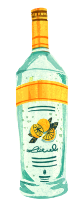
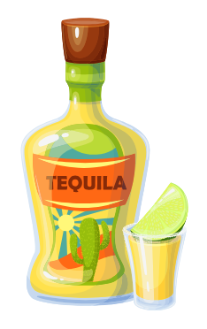
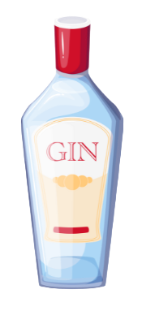
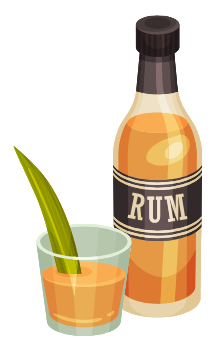

Hover over each alcohol to learn a bit more about them

Vodka
- Very low in calories (ingredients are only alcohol and water)
- Gluten free
- Alcohol content (most vodkas are about 40% alcohol)

Tequila
- Low in sugar and contains no carbohydrates
- There are around 5 different types of tequila
- Alcohol content (most tequilas are about 30-40% alcohol)

Gin
- Made from grain and flavored with botanicals
- Juniper berries in gin are said to help prevent heart disease and improve
blood circulation
- Alcohol content (most gins are 35-60% alcohol)

Rum
- There are 5 different types of rum
- Rum is made from sugar cane
- Alcohol content (most rums are 40-80% alcohol)